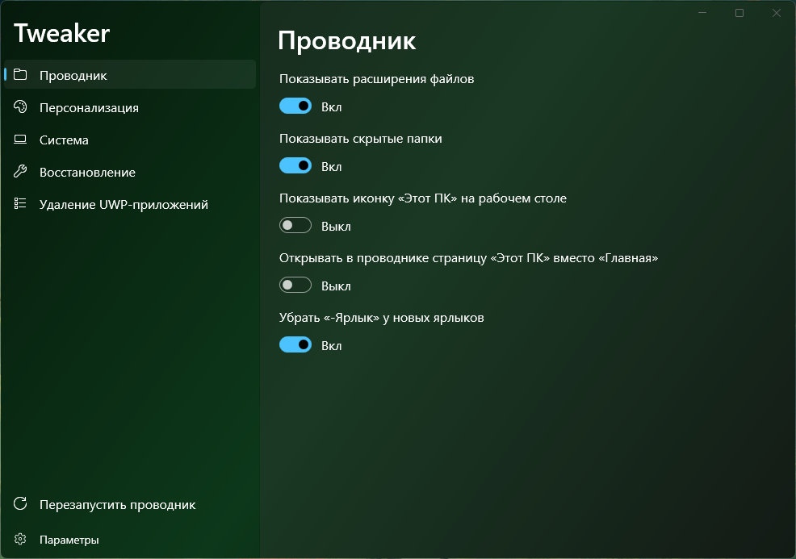
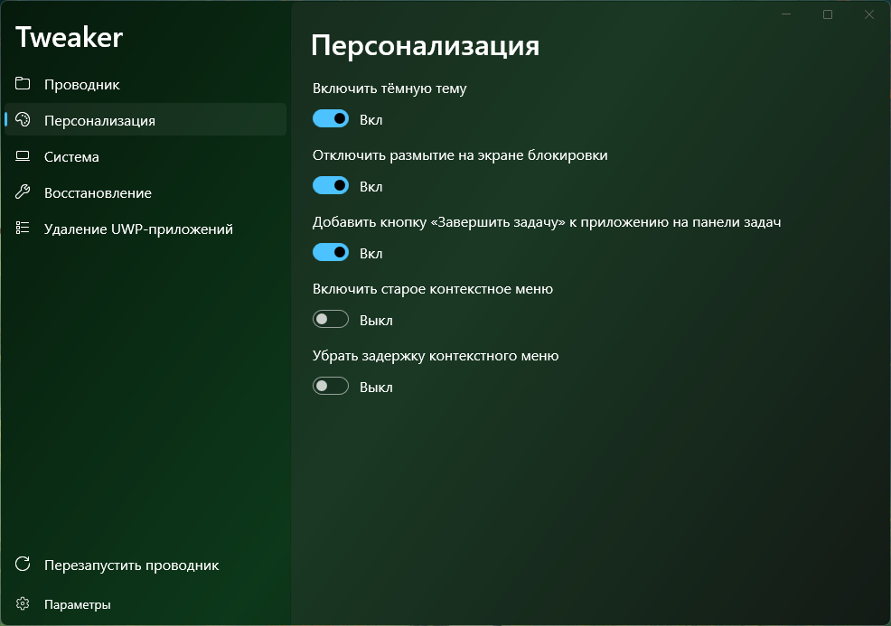
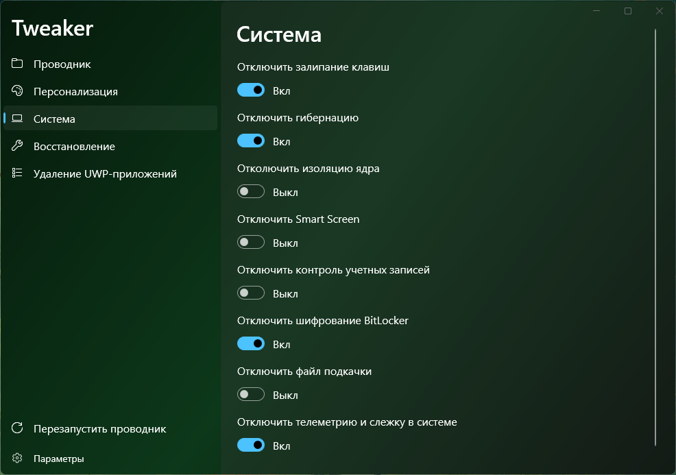
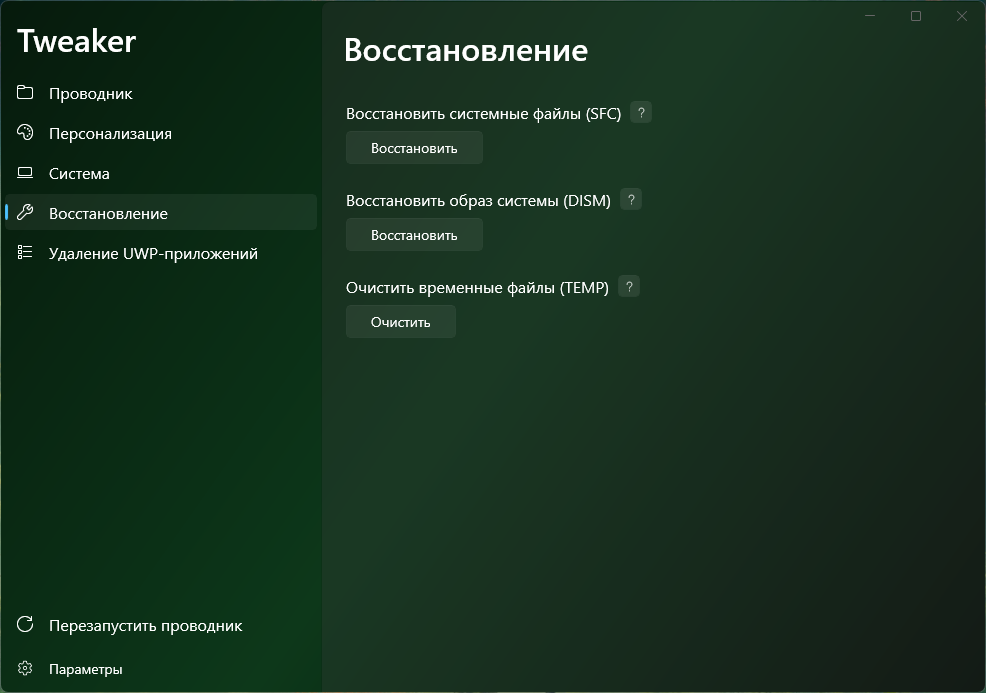
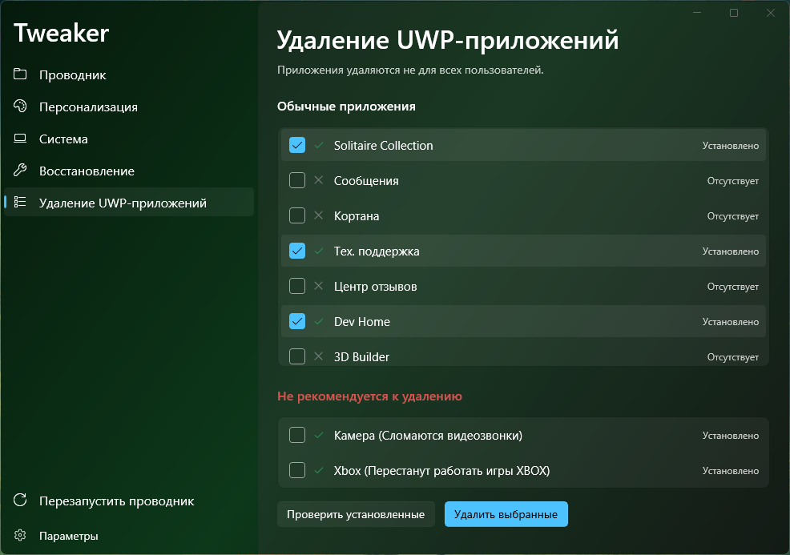
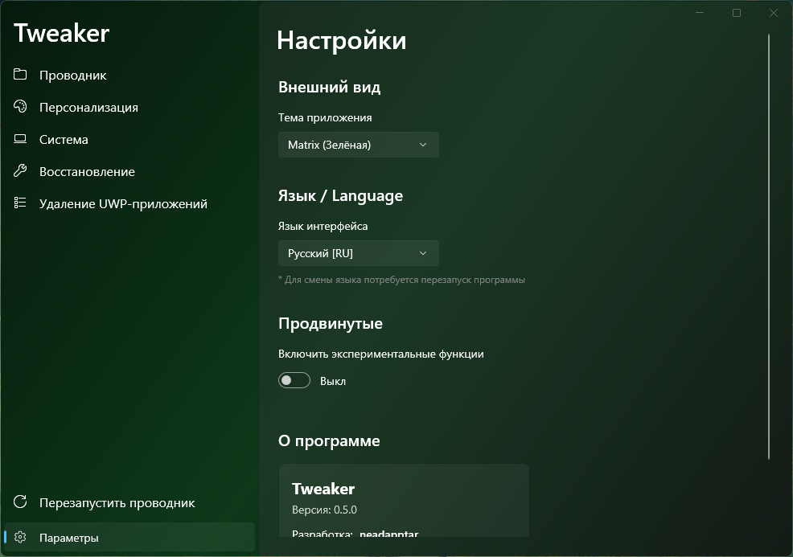

Привет! Сегодня я хочу подробно рассказать о текущем состоянии моего проекта Tweaker. Это утилита, которую я разрабатываю для тонкой настройки Windows, отключения ненужного мусора и возвращения системе её первозданной отзывчивости.
Недавно интерфейс был полностью переписан с использованием современных компонентов, добавлена удобная боковая панель (NavigationView), и программа доросла до версии 0.5.0. Давайте разберем, что уже реализовано и отлично работает.
📁 Проводник (Explorer)
Настройки проводника — это то, с чем мы сталкиваемся каждый день. Я вывел самые раздражающие мелочи в отдельные тумблеры, чтобы их можно было решить в один клик. Прямо из приложения можно перезапустить процесс `explorer.exe`, чтобы изменения вступили в силу мгновенно.

- Отображение скрытых элементов: Включение показа расширений файлов и скрытых папок.
- Мой компьютер: Возврат иконки «Этот ПК» на рабочий стол и принудительное открытие раздела «Этот ПК» при запуске проводника (вместо новой бесполезной вкладки «Главная»).
- Чистота интерфейса: Удаление раздела «Галерея» из боковой панели и отключение приставки «-Ярлык» при создании новых ярлыков.
🎨 Персонализация
Интерфейс Windows 11 красивый, но иногда его хочется сделать удобнее и строже. В этом разделе я собрал твики для визуальной части системы:

- Принудительное включение тёмной темы.
- Отключение размытия (Blur) на экране блокировки для лучшей производительности и четкости.
- Добавление кнопки «Завершить задачу» (Kill Task) при клике правой кнопкой мыши по приложению на панели задач (очень полезно для зависших программ!).
- Возврат старого контекстного меню и полное отключение задержки при его вызове.
- Отключение встроенной рекламы в меню «Пуск» и на панели задач.
⚙️ Система и Безопасность
Самый мощный раздел программы. Здесь отключаются функции, которые часто потребляют ресурсы в фоновом режиме или просто мешают продвинутым пользователям. Внимание: некоторые из этих настроек снижают безопасность системы, так что используйте их с умом.

- Полное отключение телеметрии и слежки в Windows.
- Отключение залипания клавиш (больше никаких случайных окон в играх!).
- Отключение гибернации и файла подкачки (Swap File) для экономии места на диске.
- Отключение Smart Screen, Изоляции ядра и Контроля учетных записей (UAC).
- Отключение автоматического шифрования дисков BitLocker.
- Активация меню дополнительных параметров (Автоматическое восстановление) при каждой загрузке системы.
🛠️ Восстановление и Удаление UWP
Если система уже начала «тормозить», в Tweaker встроены инструменты для её обслуживания. Больше не нужно запоминать консольные команды.

Через удобные кнопки можно запустить проверку и восстановление системных файлов с помощью утилит SFC (System File Checker) и DISM. Также реализована очистка папок Temp от скопившегося мусора.
Деблоатер UWP-приложений
В Windows встроено огромное количество UWP-приложений, которые невозможно удалить стандартными средствами. Tweaker сканирует систему и делит все установленные программы на два списка:

- Обычные приложения: Безопасны для удаления (калькулятор, погода, карты и т.д.).
- Не рекомендуется к удалению: Системные компоненты, удаление которых может сломать работу Windows.
⚙️ Настройки программы
В настройках уже есть поддержка смены тем приложения, поддержка русского языка (английский будет реализован в будущем), а также тумблер активации экспериментальных функций.

Что дальше?
В будущем я планирую подписать пояснения для некоторых кнопок, расширить функционал, добавить более удобный диспетчер задач и управление установленными программами. Также появится возможность активировать нововведения на инсайдерских сборках системы.
Следите за обновлениями!